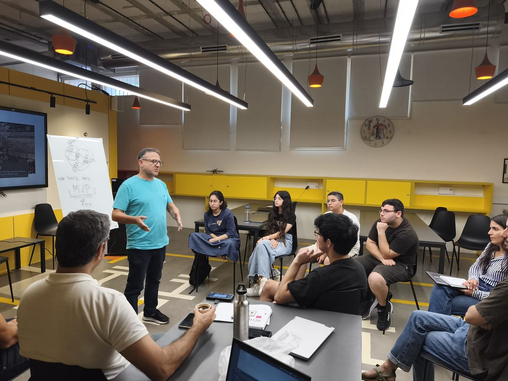

From Trauma to Opportunity:
The Future of Resilience Innovation
In a world shaped by global challenges, we see Sderot and the Western Negev as the source for pioneering breakthrough solutions. The region’s unique reality has fostered the development of cutting-edge technologies in mental health and community resilience — an urgent need that has only intensified since October 7th.
Sderot serves as a ripe environment for the advancement of next-generation resilience technologies. With access to vast datasets, strategic partnerships, and significant governmental support, the hub bridges urgent global needs with technological excellence. Join us in shaping the future of resilience.
